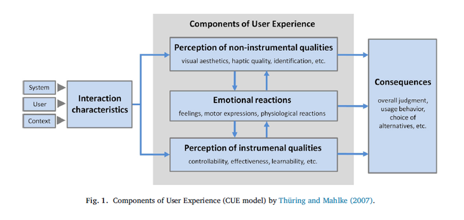

Contribution by Zukiswa Tuso
Based on the insights from the paper by Minge and Thüring (2018), I would adapt Figure 1 below, which represents the CUE (Components of User Experience) model,
to reflect a more practical approach in management systems.
My approach when looking into Designing, and Evaluating Management Systems would be:

- Incorporating BDD and Secure Coding in the SDLC: I would modify the CUE model (Fig. 1) to integrate BDD principles and secure coding practices early in the UX model, aligning
with the idea that user experience isn't only about usability but also about embedding secure and behaviour-driven practices from the start (Minge & Thüring, 2018).
This approach then addresses both the functional and the non-functional requirements, reducing later adjustments and enhancing security.
- Handling Constraints and Uncertainty: Since the paper highlights that the perceptions of usability and emotions evolve, I'd incorporate elements showing repetitive evaluations,
where checkpoints are used to manage constraints and uncertainties. Secondly, I'd assess Developing Skills in a Virtual Professional Environment and look at:
- Team Dynamics and Real-life Roles: Adapting the CUE model (Fig. 1), I'd include aspects that show how different team roles contribute to the evolving user experience,
demonstrating the collaborative nature of UX in a virtual setting.
- Continuous Feedback: I'd include feedback loops in the CUE model and would emphasise that people's emotions and perceptions change over time, aligning with how teams should
adapt progressively to these changes in order to achieve effective virtual collaboration (Minge & Thüring, 2018).
References
- Bloomberg News, 2013. Avon Halts SAP Rollout After Orders Drop, Executives Quit. Bloomberg. Available at: https://www.bloomberg.com/news/articles/2013-11-14/avon-halts-sap-rollout-after-orders-drop-executives-quit [Accessed 5 August 2024].